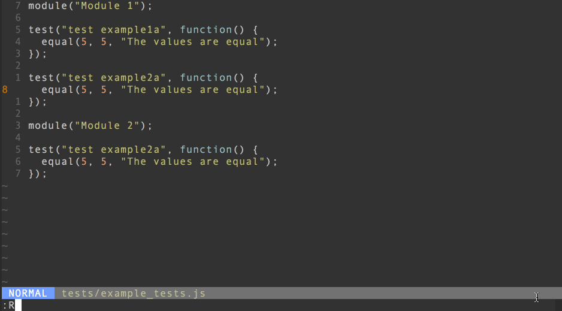
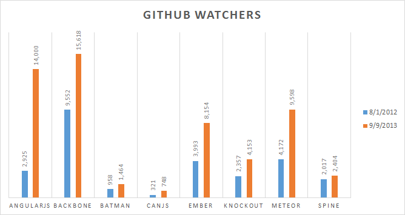
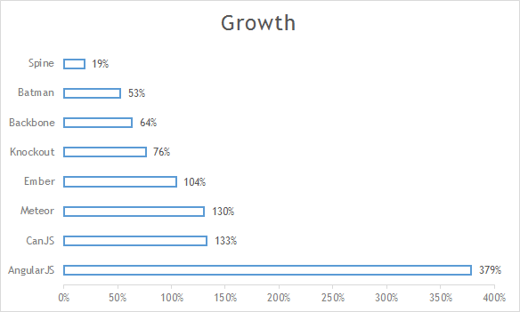

AngularJS + Kinect
Часть 1
Кто я?

Ivan Novikov
Software developer
Клиентская разработка с помощью AngularJS
История AngularJS
Hello AngularJS!
Преимущества использования
История AngularJS
Разработан в 2009 товарищем Misko Hevery.
Официально представлена версия 0.9.0 в октябре 2010
Текущая версия 1.3.0. Активно поддерживается инженерами Google.
Хотите быть счастливым frontend разработчиком?
Внимание! Демка!
Hello AngularJS!
// script.js
(function() {
angular.module('helloApp', [])
.controller('hello', function ($scope) {
$scope.message = 'AngularJS!';
});
})();
// index.html
<html ng-app="helloApp">
<body ng-controller="hello">
<h1>Hello {{message}}</h1>
</body>
</html>
Правило 80/20
Так почему все-таки?

Преимущества AngularJS
Интуитивный framework помогает вам лучше организовать свой код.
Декларативный подход вместо императивного.
Отсутствие макаронного кода улучшает сон.
Разделение клиентской и серверной стороны, что позволяет вести разработку параллельно.
Представления - это HTML, а значит вы уже умеете их писать.
Структуры данных - обычные JavaScript переменные легко интегрируются с любой другой технологией.
Моей проектной команде удалось его скрестить с Kinect SDK.
...И этот список у меня очень большой
Нужны еще аргументы?
Размер community

Нужны еще аргументы?
Рост функциональности

Что дальше?
AngularJS 2.0 - mobile framework?

Что дальше?
Ionic framework = cross platform на базе AngularJS

Магия AngularJS
Внимание! Демка!
Интеграция с Server Side
REST and $resource
Promises
$resource
$resource это сервис взаимодействия с сервером, предоставляющим некоторый API (JSON, XML).
$resource shortcut methods
$resource.get
$resource.save
$resource.query
$resource.remove
$resource.delete
Promises и философия deffered-объектов
function getUser(name) {
var deffered = $q.defer();
var UserApi = $resource('http://restserver.com/api/user/:name',
{ query: { params: { name: 'name' } } });
UserApi.query( name: name ), function(user){
// что-то делаем с пользователем
deferred.resolve(user);
});
return deffered.promise;
}
Пример: exception propagation
getUser('jonny', function(err, user){
if(err) {
ui.error(err);
} else {
getBestFriend(user, function(err, friend){
if (err) {
ui.error(err);
} else {
ui.showBestFriend(friend,
function(err, friend){
if (err) {
ui.error(err);
}
}
}
});
Пример: exception propagation
Promises
getUser('jonny').then(getBestFriend, ui.error)
.then(ui.showBestFriend, ui.error);